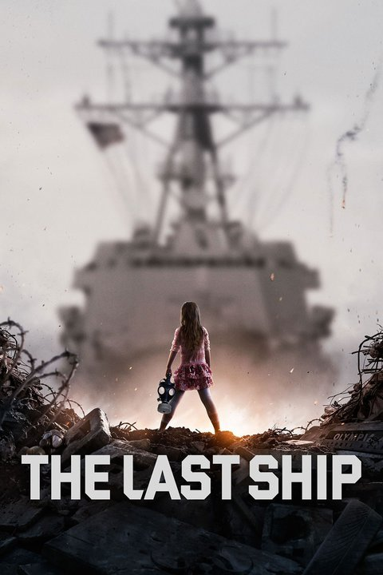

The Last Ship (Aired 2014-)
Rating: 7.5/10
Age Restriction: TV-12
The crew of a naval destroyer is forced to confront a new existence when a pandemic kills off most of earth's population.
Creators: Steven Kane, Hank Steinberg
Cast
Travis Van Winkle as .... Lt. Danny Green
Jocko Sims as .... Lt. Carlton Burk
Eric Dane as .... CO CDR Tom Chandler
Rhona Mitra as .... Dr. Rachel Scott
Adam Baldwin as .... XO Mike Slattery
Charles Parnell as .... CMC Jeter
Marissa Neitling as .... Lt. Kara Foster